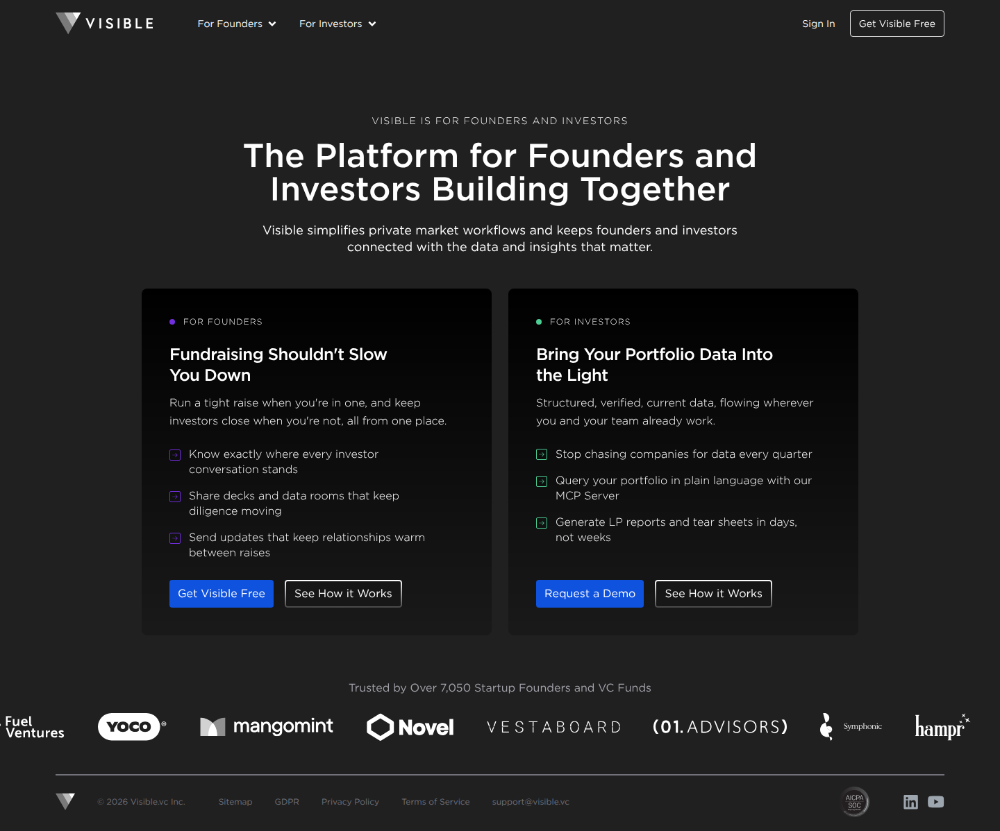
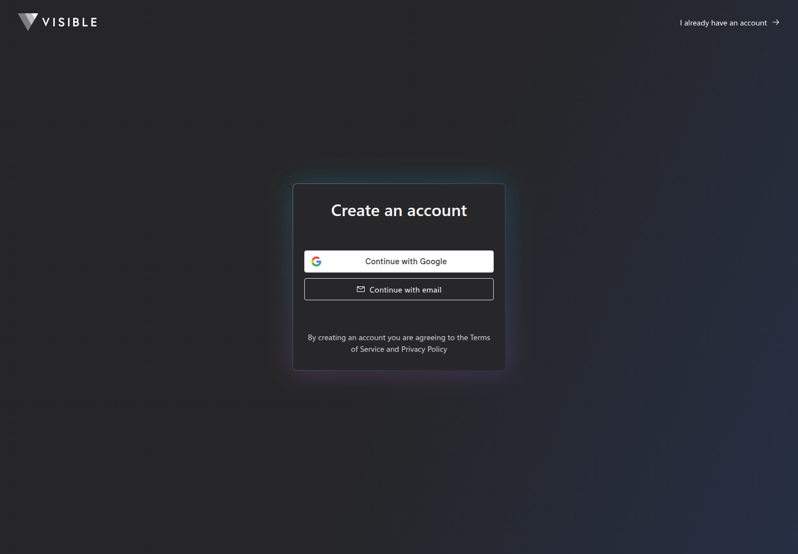
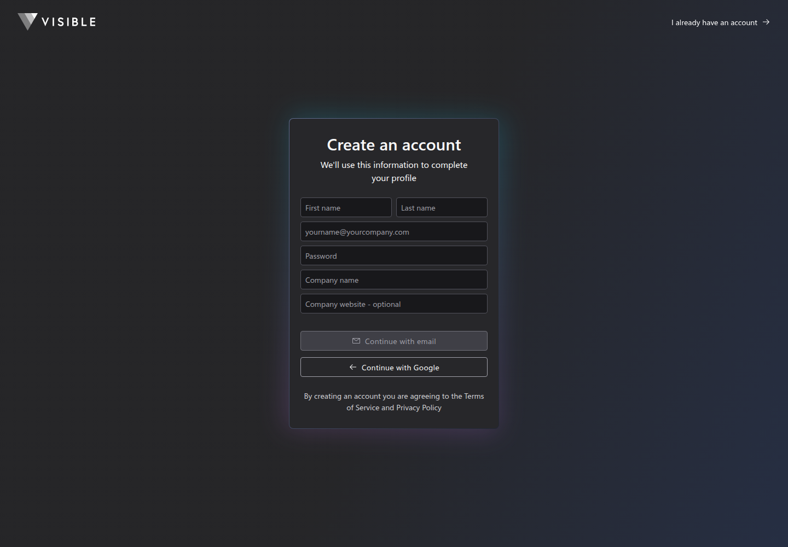

Profile
- Company
- Visible.vc
- Url
- https://visible.vc/
- Source Category
- Capital & discovery marketplaces
- Research Status
- Deep Cited Research / Draft Complete
- Current Status
- live - active founder/investor platform with July 2026 blog/product activity and free Visible Connect sign-up.
- Founded Launch Year
- 2014 per CB Insights/SEC funding history; LinkedIn says 2016
- Company Age
- 12 years from 2014; 10 years from LinkedIn 2016
- Hq Country
- United States - Chicago, IL (per CB Insights)
- Operating Area
- Global startup/VC workflows
- Target Users
- Startup founders raising capital and managing investor relationships; VC/investor teams monitoring portfolios/reporting
- Product Category
- founder-investor / capital; investor updates; fundraising CRM; data room; portfolio monitoring; AI for investors
Product Flows
- Swipe Card Interface
- no
- Mutual Match
- no
- Ai Matching Scoring
- yes - AI-powered portfolio monitoring and AI-driven workflows/MCP for investors
- Ai Deck Scoring
- yes - pitch/deck workflows plus AI fundraising resources
- Founder To Founder Flow
- no
- Founder To Investor Flow
- yes - updates, decks, data rooms, fundraising pipelines, Visible Connect
- Project Profiles
- yes - founder/company profiles, investor updates, portfolio-company records
- Messaging Collaboration
- yes - investor updates and relationship workflows
- Mobile App
- not found
- Web App
- yes
Security & Documents
- Nda Gated Unlock
- not found
- Data Room
- yes
- E Signature
- not found
- Meeting Prep Ai Briefing
- yes - AI/MCP board-meeting prep workflows for investors
Pricing, Funding & Traction
- Pricing Model
- not publicly found on checked pages; demo/contact-led for investors; free Visible Connect signup
- Business Model
- SaaS subscriptions for founders/investors; portfolio monitoring/reporting and fundraising tools
- Total Funding
- $2.16M per CB Insights; FilingFlow totals $2,189,990 across SEC Form D filings; Owler says $2.5M; PitchBook lists $5.3M (upper-bound outlier)
- Funding Rounds
- 4 SEC/Form D filings per FilingFlow; CB Insights says 5 fundings; LinkedIn says 6 total rounds
- Investors
- High Alpha and Real Ventures per Owler; CB Insights latest investors undisclosed
- Funding Source Type
- private equity/seed/Form D funding
- Last Funding Date
- 2025-06-18 per CB Insights/FilingFlow; LinkedIn says 2025-07-18
- Users Traction
- 7,050+ startup founders and VC funds on official site; LinkedIn says 5,600+ investors and founders
- Deals Funding Facilitated
- 3.2M founder-to-investor interactions through updates, decks, data rooms, and pipelines.
- Partnerships
- not found
- Media Coverage
- not found
- Product Update Activity
- active; product posts in 2026 include MCP server, AI Docs, slide feedback, AI file uploads
- Acquisition Rebrand History
- not found
Scores
- Product Overlap Score
- 4
- Feature Maturity Score
- 3
- Market Traction Score
- 2
- Funding Strength Score
- 1
- Ai Depth Score
- 3
- Nda Security Strength Score
- 3
- Network Moat Score
- 2
- Direct Threat Score
- 2.6
- Source Confidence
- Medium
Evidence Notes
- Primary Sources
- https://visible.vc/
https://visible.vc/blog/category/product/
https://visible.vc/resource-hub/
https://connect.visible.vc/
https://docs.visible.vc/ - Secondary Sources
- https://www.linkedin.com/company/visible-vc
https://www.cbinsights.com/company/visiblevc
https://www.cbinsights.com/company/visiblevc/financials
https://filingflow.app/companies/0001619876
https://www.owler.com/company/visible/funding - Unsupported Claims
- Founding year/HQ not verified from official pages checked.
- Contradictions
- Founded year, total funding, round count, and last funding date differ across LinkedIn, CB Insights, FilingFlow and Owler.
- Last Checked
- 2026-07-19
- Notes
- Strong overlap in investor relationship/data-room/AI briefing workflows; no swipe/mutual-match evidence.
Registration Flow
Research date: 2026-07-19. Screenshots are sanitized public copies from the private registration-flow capture set; credentials, tokens, verification links/codes, browser chrome, and private identifiers are not intentionally published.
Outcome: stopped at required truthful-details / submission boundary.
Stop point: Blank direct-email Create an account form, before entering personal/company details, submitting the form, creating an account, or requesting email verification
Blocker / boundary: Visible.vc requires first name, last name, and company name in addition to the authorized email and site-specific password. Those truthful profile details were not supplied in the authorized credential file, so they were not guessed or entered and the account form was not submitted.
- Official public homepage. Visible.vc's official homepage presents separate founder and investor offerings. The founder path includes a prominent 'Get Visible Free' action, while the investor path offers 'Request a Demo'.
- Create-account method selection. The free founder entry opens app.visible.vc/create-account. The page offers 'Continue with Google' and direct 'Continue with email' methods, links for existing-account sign-in, Terms of Service, and Privacy Policy. Google OAuth was not opened because direct email registration was available.
- Direct-email account form and stop point. The direct-email path opens app.visible.vc/create-account/email and requests first name, last name, email, password, company name, and an optional company website. The Continue with email button remains disabled while required fields are blank. The page states that account creation agrees to the Terms of Service and Privacy Policy. No CAPTCHA, Cloudflare challenge, payment, paid-plan gate, KYC, or financial action is shown at this stage.


